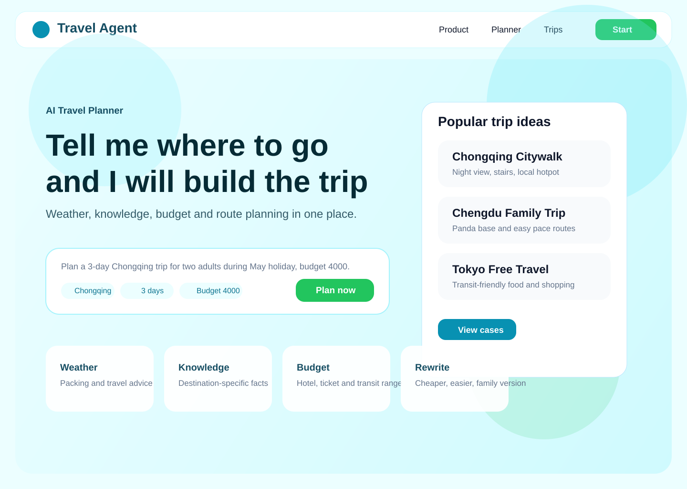
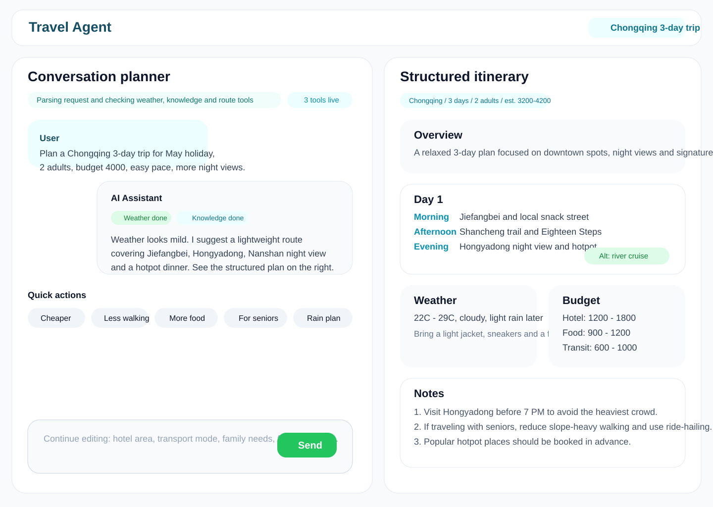
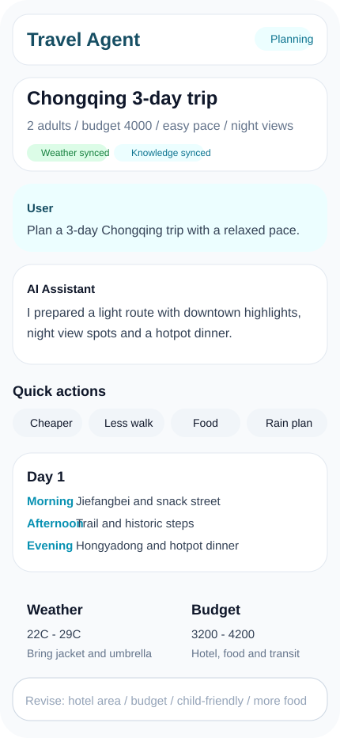

视觉基调
主色采用青蓝与绿色，强调旅行、地图感与可信赖；整体偏亮色、轻阴影、大圆角卡片，适合 AI 产品的引导与结果展示。
本页根据 `travel-agent/docs/02-ui-design.md` 与 `ui-ux-pro-max` 设计系统生成，输出真实可查看的 HTML + SVG 设计稿，覆盖首页、桌面端对话规划页和移动端对话规划页。
主色采用青蓝与绿色，强调旅行、地图感与可信赖；整体偏亮色、轻阴影、大圆角卡片，适合 AI 产品的引导与结果展示。
桌面端采用“两栏布局”：左侧对话与追问，右侧结构化结果；移动端保留摘要、快捷改写与单日卡片，减少信息压力。
重点体现 Agent 过程可视化、天气与预算摘要、按天行程卡片，以及更省钱、少走路、加美食等快捷改写操作。


